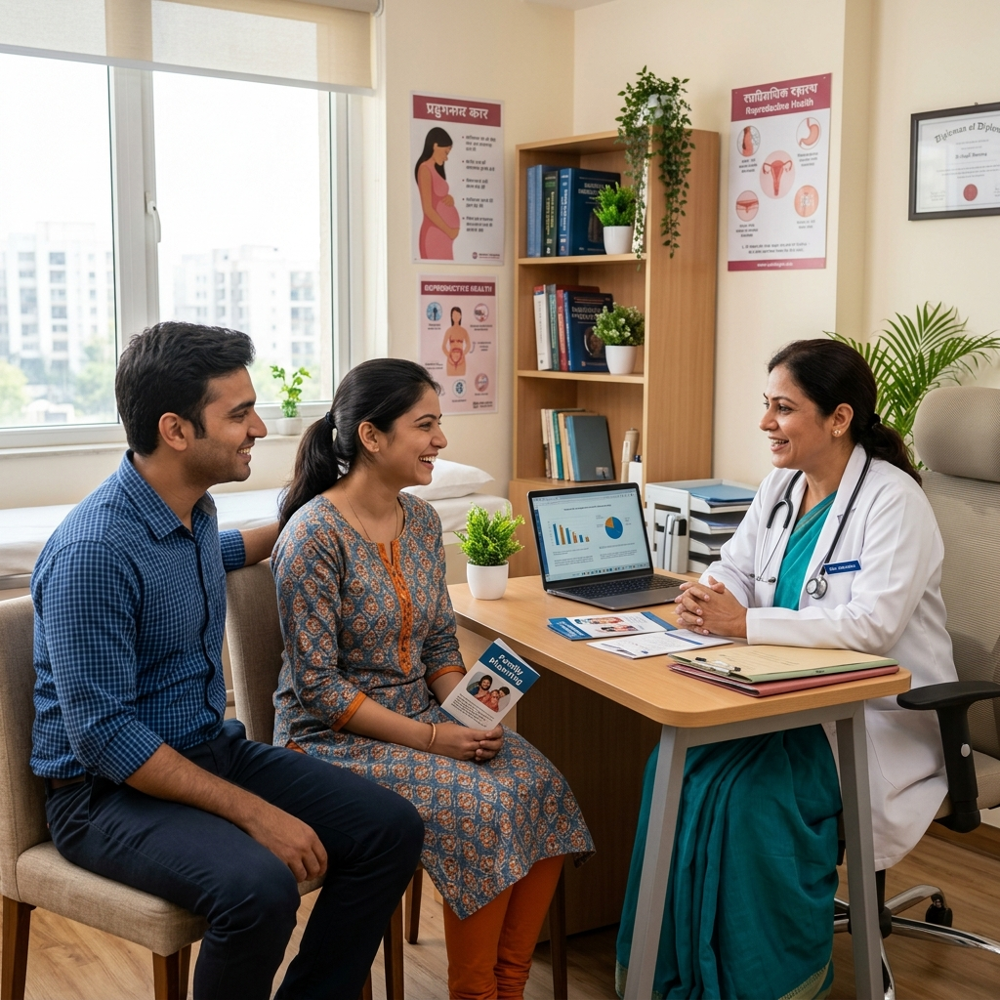

Comprehensive medical solutions tailored for women at every milestone of their healthcare journey.

Complete prenatal and postnatal care for expecting mothers, supporting both normal vaginal delivery and Caesarean section (LSCS) with expert monitoring at every stage.
Specialised monitoring and expert care for pregnancies involving diabetes, hypertension, multiple births or other complex medical conditions, with full ICU support.

Personalised guidance on contraception, family spacing and pre-conception health to help you plan your family safely and confidently.
Comprehensive fertility evaluations, ovulation tracking, follicular study and personalised plans to support your reproductive wellness journey.
Safe, confidential and medically supervised abortion care alongside comprehensive contraception counselling in a supportive, non-judgmental environment.

Minimally invasive keyhole surgery for gynaecological conditions — faster recovery, less pain, reduced scarring and shorter hospital stays.

Diagnostic cell collection screenings and biopsies to detect abnormal or pre-cancerous cellular mutations early, offering vital preventative healthcare protection.
Specialized endocrine care focusing on regulating metabolic syndromes, PCOS symptoms, acne, weight, and managing symptoms associated with menopausal transition.
Detailed magnified visual check of the cervix, vagina, and vulvar walls using a high-powered colposcope to identify and biosampler any suspicious lesions.
Complete prenatal and postnatal care for expecting mothers, supporting both normal vaginal delivery and Caesarean section (LSCS) with expert monitoring at every stage.
Advanced labor pain management options including 24/7 epidural support, continuous maternal-fetal tracking, and fully customized birthing plans to secure a safe and stress-free birth experience.
Evidence-based diagnostic evaluations and fertility restoration treatments, ovulation tracking, follicular screening, and hormone optimization plans to support reproductive wellness.
Advanced keyhole abdominal surgical solutions for treating ovarian cysts, uterine fibroids, ectopic pregnancies, and severe pelvic endometriosis with minimal tissue trauma.
Specialized maternal-fetal surveillance and custom clinical protocols targeting gestational diabetes, preeclampsia, multiple births, or advanced maternal age factors.
Thorough counseling on planning family size, timing spacing, and executing birth control decisions through highly secure and scientifically proven methodologies.
Diagnostic cell collection screenings from the cervix to detect abnormal or pre-cancerous cellular mutations early, offering vital preventative healthcare protection.
Specialized endocrine care focusing on regulating metabolic syndromes, PCOS symptoms, acne, weight, and managing symptoms associated with menopausal transition.
Detailed magnified visual check of the cervix, vagina, and vulvar walls using a high-powered colposcope to identify and biosampler any suspicious lesions.
Each patient gets a dedicated evaluation pathway. Contact our clinic desk today to secure your consulting appointment.
Book Your Consult Now →